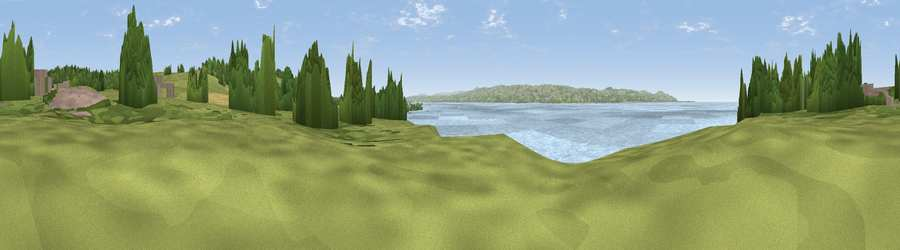

Viewpoint near Thurstaston
#28122 in England · top 60% of its area beats it · near ThurstastonThe view, rendered

A 360° render of this exact spot computed from the terrain model, tree cover and land cover — summer colours, afternoon light, calibrated against photographs of famous viewpoints. Real trees, hedges and buildings will differ in detail.
The panorama
Grey silhouette: terrain skyline in each direction (720 bearings, Earth curvature and refraction included). Dashed green: skyline with trees (+15 m) and buildings (+8 m) as obstacles. Blue strip: how far the ground is visible on each bearing.
Where the view opens
Wedge length = distance to the farthest visible ground on that bearing (vegetation-aware). Rings at 10, 25 and 50 km.
What fills the view
77% water · 9% grassland · 8% bare ground · 4% woodland ·
Angular shares of the visible panorama (visual magnitude), not map area. Landscape diversity 0.37 (0–1 Shannon).
Key numbers
More beautiful places nearby
The staircase of upgrades: each row has a higher view potential than everything closer. Driving times are estimates from straight-line distance, calibrated against real road routing — check an actual route before setting out.
| Place | Direction | Drive | Score |
|---|---|---|---|
| Viewpoint near Thurstaston | E · 1 km | ~4 min | 62.1 |
| Thurstaston Hill | NNE · 2 km | ~4 min | 66.8 |
| Viewpoint near Caldy | NNW · 3 km | ~7 min | 68.0 |
| Helsby Hill | ESE · 27 km | ~43 min | 74.6 |
| Beacon Hill | ESE · 29 km | ~46 min | 77.3 |
| Viewpoint near Harthill | SE · 39 km | ~58 min | 80.5 |
| Rivington Pike | NE · 51 km | ~72 min | 81.9 |
| White Brow | NE · 51 km | ~72 min | 82.9 |
53.34113, -3.14584 · source: osm viewpoint · position refined by local search. Computed location — check access rights before visiting.